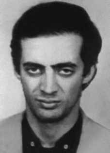

Umberto
de Albuquerque
Câmara
Neto
CIRCUNSTÂNCIAS DA MORTE
Ao retornar para o Rio de Janeiro após uma viagem ao Recife, Umberto de Albuquerque encontrou-se, por acaso, com seu companheiro de organização, José Carlos Mata Machado. Na ocasião, marcaram de se encontrar em um trecho da praia de Botafogo, na Zona Sul da cidade. Umberto estava hospedado na casa de Marcelo Santa Cruz, onde permaneceu apenas uma noite. No dia seguinte, informou a Marcelo que iria a um encontro rápido e que voltaria para o almoço. Não retornou. O contato com José Carlos foi breve. Combinaram um novo encontro naquele mesmo dia, pois queriam se certificar se estavam sendo monitorados. José Carlos apareceu no local e horário definidos, esperou alguns instantes, mas Umberto não apareceu. José Carlos avisou aos amigos do não aparecimento de Umberto ao encontro marcado, seguiu do Rio de Janeiro para São Paulo e, em seguida, para Pernambuco, onde foi assassinado 20 dias depois pelos órgãos de repressão política. Os amigos de Umberto passaram a procurar por informações sobre seu paradeiro. Enviaram uma carta pedindo ajuda a Dom Ivo Lorscheiter, à época secretário-geral da Conferência Nacional dos Bispos do Brasil (CNBB), mas a resposta foi de que não poderia ajudar. Uma carta anônima, publicada no Jornal dos Sports de 9 de novembro de 1973, informava que Umberto estava preso desde o dia 8 de outubro e que corria perigo de vida, já que a prisão se revestia de características de sequestro. O remetente pedia que providências fossem tomadas para que Umberto não tivesse o mesmo destino que outros militantes, tais como José Carlos e Gildo Lacerda, mortos pelos aparatos de repressão política. Para isso, segundo o remetente anônimo, era necessário que os órgãos de segurança assumissem publicamente a prisão do estudante. Em 29 de junho de 1974, o Movimento Democrático Brasileiro (MDB) publicou nota oficial no Diário de Brasília, questionando o governo militar sobre o destino de 11 presos políticos desaparecidos, entre os quais Umberto de Albuquerque. No ano seguinte, o nome de Umberto foi listado em uma nota do Ministério da Justiça, veiculada em fevereiro de 1975, na qual era identificado como foragido. Documentos oficiais produzidos no âmbito do Ministério do Exército e do Ministério da Marinha, em 1993, apresentavam diferentes versões a respeito do paradeiro de Umberto, após ter sido preso. Enquanto o documento produzido pelo Ministério do Exército informa que Umberto teria sido visto em Recife em julho de 1974, o documento do Ministério da Marinha ressalta que ele teria morrido em outubro de 1973. Pesquisas documentais indicam que, na ocasião em que desapareceu, Umberto estava sendo procurado pelos órgãos de repressão política e foi preso no Rio de Janeiro em 8 de outubro de 1973. Até a presente data Umberto de Albuquerque Câmara Neto permanece desaparecido.
Upon returning to Rio de Janeiro after a trip to Recife, Umberto de Albuquerque met, by chance, with his fellow organizer, José Carlos Mata Machado. On that occasion, they arranged to meet on a stretch of Botafogo beach, in the South Zone of the city. Umberto was staying at Marcelo Santa Cruz's house, where he stayed for just one night. The next day, he informed Marcelo that he was going on a quick date and that he would return for lunch. Didn't return. Contact with José Carlos was brief. They agreed to meet again that same day, as they wanted to make sure they were being monitored. José Carlos appeared at the defined place and time, waited a few moments, but Umberto did not appear. José Carlos informed his friends that Umberto would not appear at the scheduled meeting, he went from Rio de Janeiro to São Paulo and then to Pernambuco, where he was murdered 20 days later by political repression bodies. Umberto's friends started looking for information about his whereabouts. They sent a letter asking for help from Dom Ivo Lorscheiter, at the time general secretary of the National Conference of Brazilian Bishops (CNBB), but the response was that he could not help. An anonymous letter, published in Jornal dos Sports on November 9, 1973, informed that Umberto had been in prison since October 8 and that his life was in danger, as the prison had the characteristics of a kidnapping. The sender asked that measures be taken so that Umberto would not suffer the same fate as other activists, such as José Carlos and Gildo Lacerda, killed by the apparatus of political repression. For this, according to the anonymous sender, it was necessary for security agencies to publicly acknowledge the student's arrest. On June 29, 1974, the Brazilian Democratic Movement (MDB) published an official note in the Diário de Brasília, questioning the military government about the fate of 11 missing political prisoners, including Umberto de Albuquerque. The following year, Umberto's name was listed in a note from the Ministry of Justice, published in February 1975, in which he was identified as a fugitive. Official documents produced within the Ministry of the Army and the Ministry of the Navy, in 1993, presented different versions regarding Umberto's whereabouts, after being arrested. While the document produced by the Ministry of the Army states that Umberto had been seen in Recife in July 1974, the document from the Ministry of the Navy highlights that he had died in October 1973. Documentary research indicates that, at the time he disappeared, Umberto was being sought by political repression bodies and was arrested in Rio de Janeiro on October 8, 1973. To date, Umberto de Albuquerque Câmara Neto remains missing.
Al regresar a Río de Janeiro después de un viaje a Recife, Umberto de Albuquerque se encontró, por casualidad, con su compañero organizador, José Carlos Mata Machado. En aquella ocasión, quedaron en encontrarse en un tramo de la playa de Botafogo, en la Zona Sur de la ciudad. Umberto se hospedaba en casa de Marcelo Santa Cruz, donde permaneció solo una noche. Al día siguiente le informó a Marcelo que tenía una cita rápida y que volvería a almorzar. No regresé. El contacto con José Carlos fue breve. Acordaron volver a reunirse ese mismo día, ya que querían asegurarse de que estaban siendo monitoreados. José Carlos apareció en el lugar y hora definidos, esperó unos instantes, pero Umberto no apareció. José Carlos informó a sus amigos que Umberto no se presentaría a la reunión prevista, se dirigió de Río de Janeiro a São Paulo y luego a Pernambuco, donde fue asesinado 20 días después por órganos de represión política. Los amigos de Umberto empezaron a buscar información sobre su paradero. Enviaron una carta pidiendo ayuda a Dom Ivo Lorscheiter, en ese momento secretario general de la Conferencia Nacional de Obispos de Brasil (CNBB), pero la respuesta fue que no podía ayudar. Una carta anónima, publicada en el Jornal dos Sports el 9 de noviembre de 1973, informaba que Umberto se encontraba en prisión desde el 8 de octubre y que su vida corría peligro, ya que la prisión tenía las características de un secuestro. El remitente pidió que se tomen medidas para que Umberto no corra la misma suerte que otros activistas, como José Carlos y Gildo Lacerda, asesinados por el aparato de represión política. Para ello, según el remitente anónimo, fue necesario que los organismos de seguridad reconocieran públicamente la detención del estudiante. El 29 de junio de 1974, el Movimiento Democrático Brasileño (MDB) publicó una nota oficial en el Diário de Brasília, cuestionando al gobierno militar sobre la suerte de 11 presos políticos desaparecidos, entre ellos Umberto de Albuquerque. Al año siguiente, el nombre de Umberto figuraba en una nota del Ministerio de Justicia, publicada en febrero de 1975, en la que se le identificaba como prófugo. Documentos oficiales elaborados en el Ministerio del Ejército y en el Ministerio de Marina, en 1993, presentaban diferentes versiones sobre el paradero de Umberto, luego de ser detenido. Mientras que el documento elaborado por el Ministerio del Ejército afirma que Umberto había sido visto en Recife en julio de 1974, el documento del Ministerio de la Marina destaca que había fallecido en octubre de 1973. Las investigaciones documentales indican que, en el momento de su desaparición, Umberto estaba siendo buscado por órganos de represión política y fue detenido en Río de Janeiro el 8 de octubre de 1973. Hasta la fecha, Umberto de Albuquerque Câmara Neto permanece desaparecido.